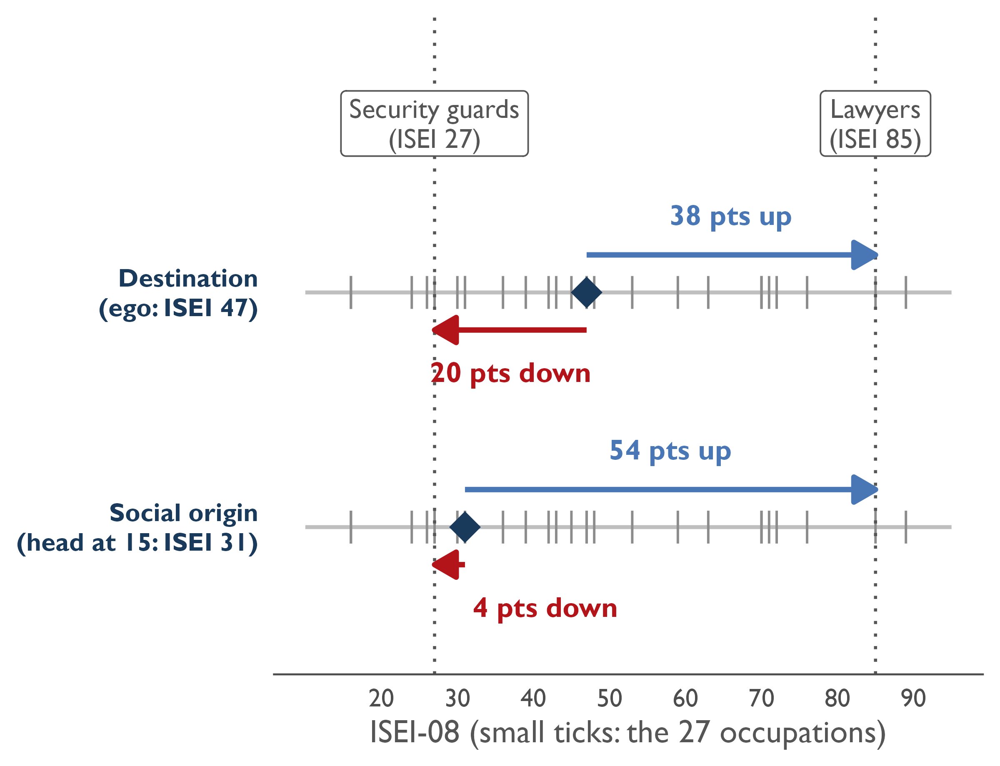
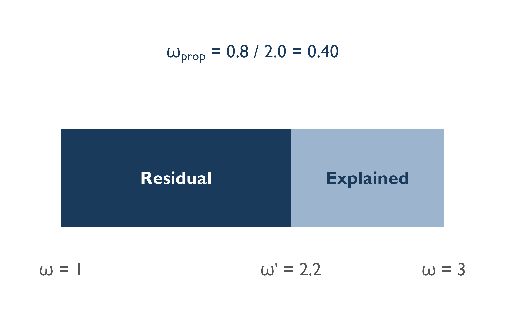
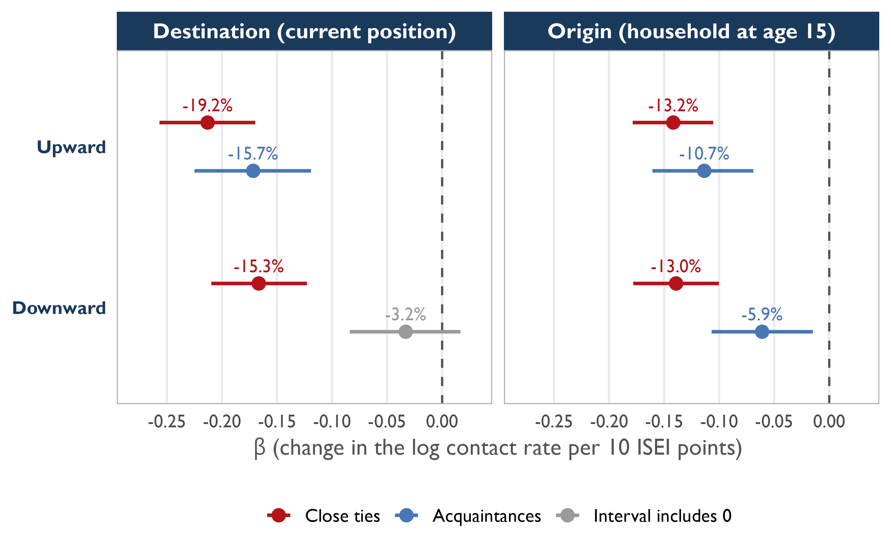
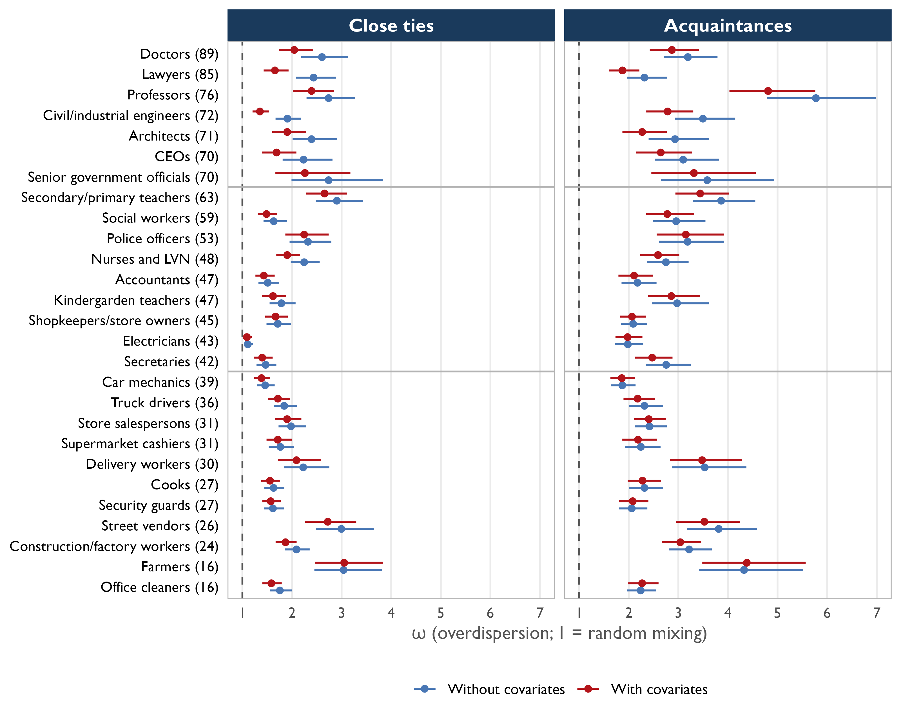
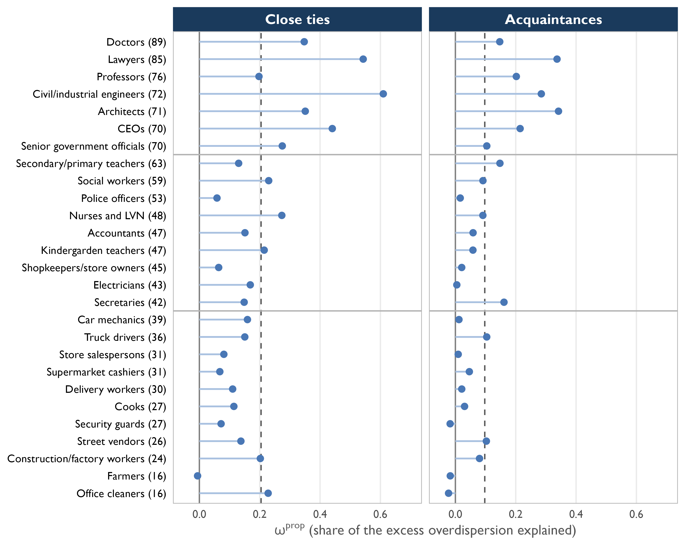

Intergenerational sources of homogeneity and occupational segregation in contact networks
Origin, destination and tie closeness in Santiago, Chile
Second Conference ECINEQ–LAC Meeting 28-29 October 2026, Montevideo.
ignacio.zavala@uc.cl
Ignacio Zavala Aránguiz & Gabriel Otero
Pontificia Universidad Católica de Chile, Universidad Diego Portales

Personal networks do not just reflect inequality: they help reproduce it
- Information, job opportunities and support circulate through personal networks (Burt, 2010; Granovetter, 2010; Van Tubergen & Volker, 2015), so their socioeconomic composition shapes which advantages accumulate and which do not (Bourdieu, 1986; DiMaggio & Garip, 2012; Lin, 2001).
- People tend to associate with those who resemble them in occupation and sociodemographic traits, especially in unequal and segregated contexts (McPherson et al., 2001; Otero et al., 2021).
- This links to a central question in stratification: how much of the position people attain, and of the resources attached to it, traces back to social origin. Access to social capital depends on initial positions, that is, on parental resources, and not only on current position Goldman (2022).
Why Chile? High inequality, low intergenerational mobility, and marked residential and educational segregation (Méndez & Gayo, 2019; Torche, 2005, 2014): a setting where contact between classes is structurally restricted.
Research question. How are origin and destination positions associated with the homogeneity and occupational segregation of contact networks in Santiago, and how does this relationship differ between close ties and acquaintances?
The literature anchors similarity in current position; social origin remains unexamined
- Studies of network composition model similarity from a single reference: ego’s current occupation, or destination (Espinosa-Rada et al., 2026; Otero et al., 2021).
- Social origin organizes the earliest and most durable ties (extended family, childhood neighborhood, school), stratified by the occupation of the household of upbringing (Blau, 1977; Feld, 1981; Lareau, 2011). Those contacts are not necessarily erased by later changes in position (Newman, 2008; Wellman, 2018).
- Do people know more people close to their social origin or to their current position, and what does each case reveal about how stratification operates in networks?
Homogeneity and segregation are not the same
- Homogeneity describes how similar two people are, relative to contact opportunities: it is a property of the ego, once the size of groups and each person’s sociability are accounted for.
- Segregation describes how concentrated access to an occupation is: its members are known by many people, or only by a few circles (DiPrete et al., 2011; Zheng et al., 2006). It is a property of access to the group, not of an individual’s network.
- The link is propensity. If the chance of knowing someone in occupation k depends on how close ego is to k, contacts pile up among nearby egos and counts become overdispersed (\(\omega > 1\)): the part of that overdispersion absorbed by distance tells us how much segregation is organized around a reference (Baum, 2025).
Three questions for Santiago
Why Chile is informative: if similarity to origin and to destination is identifiable where barriers between classes are already pronounced, it is likely a general feature of stratified societies (Contreras et al., 2019; Méndez & Gayo, 2019; Torche, 2014).
1. Homogeneity. Do contacts resemble ego’s destination more than ego’s origin? And does status distance penalize contact with higher-status occupations more than with lower-status ones?
2. Segregation. Are high- and low-status occupations more segregated in their access than middle-status ones? How much of that segregation does status similarity explain, and is it similarity to origin or to destination?
3. Tie closeness. Do both patterns get stronger among close ties (close friends and family) than among acquaintances?
Original data: 1,124 people report whom they know in 27 occupations
- Social Survey of Class, Networks and Political Attitudes (2025): Metropolitan Region of Santiago, 41 communes; probabilistic, multistage, stratified sample; face-to-face; N = 1,124.
- Position Generator (Lin & Dumin, 1986) with 27 occupations: “How many people do you know who work as…?” and, of them, “how many are close friends or family?” Result: 30,348 ego–occupation dyads, i.e. aggregated relational data (Zheng et al., 2006).
- Counts: \(c_{ik}\) = all contacts of ego \(i\) in occupation \(k\);
- \(f_{ik}\) = close ties (close friends or family);
- \(w_{ik} = c_{ik} - f_{ik}\) = acquaintances.
- About 75% of the counts are zeros.
- Status: ISEI-08 (Ganzeboom et al., 1992) of each occupation, in three levels: high (≥ 66), middle (41–65) and low (≤ 40).
| High (ISEI ≥ 66) | Middle (41–65) | Low (≤ 40) |
|---|---|---|
| Doctors (89) | Secondary/primary teachers (63) | Car mechanics (39) |
| Lawyers (85) | Social workers (59) | Truck drivers (36) |
| Professors (76) | Police officers (53) | Store salespersons (31) |
| Civil/industrial engineers (72) | Nurses and LVN (48) | Supermarket cashiers (31) |
| Architects (71) | Kindergarden teachers (47) | Delivery workers (30) |
| CEOs (70) | Accountants (47) | Security guards (27) |
| Senior government officials (70) | Shopkeepers/store owners (45) | Cooks (27) |
| Electricians (43) | Street vendors (26) | |
| Secretaries (42) | Construction/factory workers (24) | |
| Farmers (16) | ||
| Office cleaners (16) |
Distance between ego and each occupation, in ISEI points
- Two reference positions for each ego \(i\): destination (ISEI of own occupation) and social origin (ISEI of the household head when ego was 15).
- Distance to occupation \(k\), split into an upward and a downward leg:
\[\begin{aligned}D^{+}_{ik}&=\max(0,\ \mathrm{ISEI}_k-\mathrm{ISEI}_i)\\ D^{-}_{ik}&=\max(0,\ \mathrm{ISEI}_i-\mathrm{ISEI}_k)\end{aligned}\]
How to read a coefficient \(\beta\) (per 10 ISEI points)
\[\%\,\text{change in expected contacts}=100\,(e^{\beta}-1)\]
- \(\beta=-0.213\): 19.2% fewer contacts
- At 30 points: 47.2% fewer (effects compound)

From baseline segregation to the covariate model
- Baseline. If the propensity to know occupation \(k\) varies across egos, counts are overdispersed by a factor \(\omega_k\): \(\omega_k=1\) is random mixing, \(\omega_k>1\) is segregation (DiPrete et al., 2011; Zheng et al., 2006).
- Covariate model (Baum, 2025): the propensity gets an explained part \(\lambda_{ik}\); the overdispersion left is \(\omega'_k\):
\[\log\mu_{ik}=\alpha_i+\log m_k+\pi_k+\lambda_{ik}\]
- \(\lambda_{ik}\) has two parts:
\[\lambda_{ik}=\underbrace{\textstyle\sum_{l}\delta_{lk}X_{li}}_{\text{ego traits}}+\underbrace{\theta_{ik}}_{\text{four distances}}\]
- Ego traits: sex, education and age.
- Distances: up and down, from destination and from origin, one \(\beta\) each, common to all occupations.
- Bayesian estimation in Stan (Carpenter et al., 2017) via Markov Chain Monte Carlo (Baum, 2025; DiMaggio & Garip, 2012; Zheng et al., 2006), separately for close ties and acquaintances.
| Barrier effects | Covariate model | |
|---|---|---|
| Controls for | sociability, occupation size | + sex, education, age + four distances |
| Overdispersion | ωk | ω′k |
| Reads as | total segregation | segregation left unexplained |
Since occupation size and sociability are already accounted for, each \(\beta\) is homogeneity relative to contact opportunity.
Two quantities summarize how much the covariates explain
- Explained proportion (Baum, 2025; McCormick et al., 2010):
\[\omega^{\text{prop}}_k=\frac{\omega_k-\omega'_k}{\omega_k-1}\]
From 0 (nothing explained) to 1 (everything). It is not how segregated \(k\) is, but how much of its segregation the covariates account for.
- Unique contribution of a block \(X_b\) (e.g. distance to destination, both legs):
\[\Delta\omega^{\text{prop}}_k(X_b)=\omega^{\text{prop}}_{k,\text{full}}-\omega^{\text{prop}}_{k,\text{without }X_b}\]
Destination against origin: which anchor adds more?
- \(\omega\) scales with the average number of contacts, so levels are not comparable between close ties and acquaintances; we compare through these two quantities.

Contacts decline with distance from both anchors, more steeply from destination

- How to read it. Each dot is a \(\beta\) per 10 ISEI points: left of the dashed line, fewer contacts.
- Both anchors matter: seven of eight intervals exclude zero.
- Destination weighs more than origin among close ties, upward: 19.2% against 13.2% fewer contacts (probability 0.98).
- Tie type: acquaintances reach lower-status occupations almost as often as equal-status ones (3.2% fewer, not distinguishable from zero); close ties decline in both directions.
All 27 occupations are segregated, most at both ends of the hierarchy
- How to read it. \(\omega=1\) is random mixing. Blue: baseline \(\omega\); red: with covariates \(\omega'\).
- Every occupation is above 1 in both tie types; closest to mixing: electricians (1.11, close ties).
- Most segregated: both extremes, e.g. Farmers (3.04) and Professors (2.74).
- Covariates cut \(\omega\) mostly at the top (lawyers 2.44 to 1.66), hardly at the bottom.

Close ties show a U-shape by status; covariates flatten it
- Close ties: high-status 2.44, middle 1.85, low 2.04: a U-shape.
- Acquaintances: only high status stands out (3.48 against 2.75 and 2.76).
- With covariates the profile flattens, mainly at the top (2.44 to 1.90).
- The explained share is largest at the top (0.39 and 0.23) and small at the bottom (0.12 and 0.03).
| Tie type | Status | nk | Baseline | Covariates | Explained |
|---|---|---|---|---|---|
| ωk | ω′k | ωpropk | |||
| Close ties | High | 7 | 2.44 | 1.90 | 0.39 |
| Middle | 9 | 1.85 | 1.72 | 0.16 | |
| Low | 11 | 2.04 | 1.92 | 0.12 | |
| Acquaintances | High | 7 | 3.48 | 2.94 | 0.23 |
| Middle | 9 | 2.75 | 2.60 | 0.07 | |
| Low | 11 | 2.76 | 2.70 | 0.03 |
Distance and ego traits explain about 20% of segregation in close ties and 10% in acquaintances
- How to read it. \(\omega^{\text{prop}}\) runs from 0 to 1; the dashed line is the average (0.20 close ties, 0.10 acquaintances).
- Most segregation stays unexplained in both tie types.
- Highest at the top: engineers 0.61 and lawyers 0.54 (close ties); about zero for Farmers.
- Unique contribution \(\Delta\omega^{\text{prop}}\), close ties: destination 0.034, origin 0.018. Acquaintances: both below 0.01, inconclusive.

Preliminary answers: distance anchors contacts, and segregation is only partly explained
1. Homogeneity. Contacts fall with status distance from both destination and origin, more steeply from destination, mainly in close ties and upward. Acquaintances reach lower-status occupations almost as often as equal ones.
2. Segregation. Every occupation is segregated, most at both ends of the hierarchy among close ties. Distance and ego traits explain about 20% (close ties) and 10% (acquaintances), mostly at the top, and destination contributes more than origin only among close ties.
3. Tie closeness. Close ties are more homogeneous toward lower-status occupations and their segregation is more explained by distance and traits.
Results are preliminary. Next: income, children and partner, and municipality size as covariates; model comparison with leave-one-out cross-validation.
If status similarity explains little, access barriers have other sources
- The middle strata as a point of contact. The U-shape and the low segregation of everyday trades and services echo Chilean evidence that middle classes hold the most heterogeneous networks and may bridge the “edges” of the class structure (Burt, 2010; Otero et al., 2021; Otero et al., 2026). But not the whole stratum: teachers, police officers and nurses are among the most overdispersed.
- Where the unexplained 80–90% may come from. Barriers need not operate through similarity of status: shared settings such as residential and school segregation (Méndez & Gayo, 2019), the organizations where ties are formed (Feld, 1981), class-specific socialization (Lareau, 2011) and the structure of opportunities itself (Blau, 1977; McPherson et al., 2001).
- Implication. A literature that reads segregation as similarity in status (by origin or destination) can underestimate these other sources; the large residual is itself a result, and social origin still adds to destination for close ties.
Open question: which settings produce the segregation that distance in status does not explain?
Thank you!
Funding: This work was supported and funded by the National Agency of Research and Development (ANID) at the Chilean Ministry of Science, Technology, Knowledge, Innovation, grant/award number: ANID/ FONDECYT/11240249.
References
Baum, D. S. (2025). Explaining contact patterns in acquaintanceship networks: A new covariate-based model. Social Networks, 83, 79–91. https://doi.org/10.1016/j.socnet.2025.05.005
Blau, P. (1977). Inequality and heterogeneity: A primitive theorie of social structure. Free Press [u.a.].
Bourdieu, P. (1986). The Forms of Capital. In J. G. Richardson (Ed.), Handbook of Theory and Research for the Sociology of Education (pp. 241–258). Greenwood Press.
Burt, R. S. (Ed.). (2010). Structural holes: The social structure of competition. Harvard University Press.
Carpenter, B., Gelman, A., Hoffman, M. D., Lee, D., Goodrich, B., Betancourt, M., Brubaker, M., Guo, J., Li, P., & Riddell, A. (2017). Stan : A Probabilistic Programming Language. Journal of Statistical Software, 76(1). https://doi.org/10.18637/jss.v076.i01
Contreras, D., Otero, G., Díaz, J. D., & Suárez, N. (2019). Inequality in social capital in Chile: Assessing the importance of network size and contacts’ occupational prestige on status attainment. Social Networks, 58, 59–77. https://doi.org/10.1016/j.socnet.2019.02.002
DiMaggio, P., & Garip, F. (2012). Network Effects and Social Inequality. Annual Review of Sociology, 38(1), 93–118. https://doi.org/10.1146/annurev.soc.012809.102545
DiPrete, T. A., Gelman, A., McCormick, T., Teitler, J., & Zheng, T. (2011). Segregation in Social Networks Based on Acquaintanceship and Trust. American Journal of Sociology, 116(4), 1234–1283. https://doi.org/10.1086/659100
Espinosa-Rada, A., Bargsted, M., & Ortiz Ruiz, F. (2026). Socioeconomic homogeneity in acquaintance networks: Occupational prestige, education, and intergenerational mobility. Social Networks, 86, 342–353. https://doi.org/10.1016/j.socnet.2026.04.012
Feld, S. L. (1981). The Focused Organization of Social Ties. American Journal of Sociology, 86(5), 1015–1035. https://doi.org/10.1086/227352
Ganzeboom, H. B. G., De Graaf, P. M., & Treiman, D. J. (1992). A standard international socio-economic index of occupational status. Social Science Research, 21(1), 1–56. https://doi.org/10.1016/0049-089X(92)90017-B
Goldman, A. W. (2022). The Early-Life Origins of Later-Life Networks. Social Problems, 69(2), 562–590. https://doi.org/10.1093/socpro/spaa047
Granovetter, M. S. (2010). Getting a job: A study of contacts and careers (2. ed., [Nachdr.]). Univ. of Chicago Press.
Lareau, A. (2011). Unequal childhoods: Class, race, and family life (Second edition, with an update a decade later). University of California Press.
Lin, N. (1999). Social Networks and Status Attainment. Annual Review of Sociology, 25, 467–487. https://www.jstor.org/stable/223513
Lin, N. (2001). Social Capital: A Theory of Social Structure and Action. Cambridge University Press. https://doi.org/10.1017/CBO9780511815447
Lin, N., & Dumin, M. (1986). Access to occupations through social ties. Social Networks, 8(4), 365–385. https://doi.org/10.1016/0378-8733(86)90003-1
McCormick, T. H., Salganik, M. J., & Zheng, T. (2010). How Many People Do You Know?: Efficiently Estimating Personal Network Size. Journal of the American Statistical Association, 105(489), 59–70. https://doi.org/10.1198/jasa.2009.ap08518
McPherson, M., Smith-Lovin, L., & Cook, J. M. (2001). Birds of a Feather: Homophily in Social Networks. Annual Review of Sociology, 27(1), 415–444. https://doi.org/10.1146/annurev.soc.27.1.415
Méndez, M. L., & Gayo, M. (2019). Upper middle class social reproduction: Wealth, schooling, and residential choice in Chile. Palgrave Macmillan.
Newman, K. S. (2008). Falling from grace: Downward mobility in the age of affluence (Nachdr.). Univ. of California Press.
Otero, G., Plaza, A., & Zavala-Aránguiz, I. (2026). Social mobility and class segregation in personal networks over time: Evidence from longitudinal data. Frontiers in Sociology, 11, 1782127. https://doi.org/10.3389/fsoc.2026.1782127
Otero, G., Volker, B., & Rozer, J. (2021). Open But Segregated? Class Divisions And the Network Structure of Social Capital in Chile. Social Forces, 100(2), 649–679. https://doi.org/10.1093/sf/soab005
Torche, F. (2005). Unequal But Fluid: Social Mobility in Chile in Comparative Perspective. American Sociological Review, 70(3), 422–450. https://doi.org/10.1177/000312240507000304
Torche, F. (2014). Movilidad Intergeneracional y Desigualdad: El Caso Latinoamericano. Annual Review of Sociology, 40(1), S2-1-S2-25. https://doi.org/10.1146/annurev-soc-062215-092006
Van Tubergen, F., & Volker, B. (2015). Inequality in Access to Social Capital in the Netherlands. Sociology, 49(3), 521–538. https://doi.org/10.1177/0038038514543294
Wellman, B. (2018). Networks in the Global Village: Life in Contemporary Communities (B. Wellman, Ed.; 1st ed.). Routledge. https://doi.org/10.4324/9780429498718
Zheng, T., Salganik, M. J., & Gelman, A. (2006). How Many People Do You Know in Prison?: Using Overdispersion in Count Data to Estimate Social Structure in Networks. Journal of the American Statistical Association, 101(474), 409–423. https://doi.org/10.1198/016214505000001168